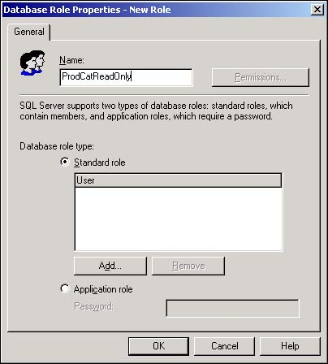
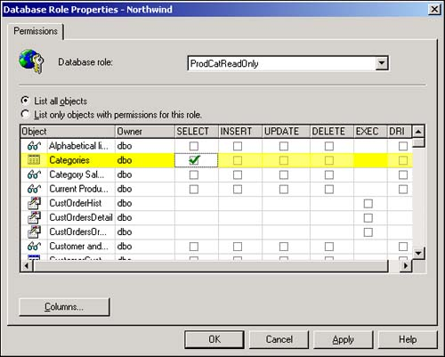

Even though the 10 built-in fixed server roles might appear to cover all contingencies, it is possible to create custom database roles for your SQL Server databases. One of the problems with the fixed database roles is that they apply to all objects within the database. Therefore, assigning users to the db_datareader role means that they'll be able to read data in all tables and views within the database. What should you do if you want to provide access just to one or two tables instead of every table?
My database includes a mix of public and confidential information. I want to set up a role that permits read access to the Categories and Products tables, but does not allow access to the Employees or Customers tables.
You'll create a custom database role that specifies read permissions on the Products and Categories tables, but does not give access to any other table in the database.
One of the essential qualities of SQL Server is its flexibility in dealing with almost any environment. As an example of this flexibility, SQL Server provides custom database roles, which are freely modified to include permissions to perform any administrative task. The SQL Server system administrator creates the custom database roles and assigns them to any users who require the special combination of permissions on the database objects.
SQL Server recognizes the security profiles that are established with custom database roles the same as fixed database roles. Although considerable work is involved in setting up custom database roles, you are assured that your users can view, edit, and add records only to those tables you want them to.
Open Enterprise Manager and expand the Northwind database's icon.
Right-click the Northwind database's Roles icon and select New Database Role from the shortcut menu. The New Role dialog box (see Figure 11.22) opens in response. Notice how similar this dialog box is to the Database Role Properties dialog box shown in Figure 11.20.

Provide a name such as ProdCatReadOnly for the custom database role.
Add users to the new role as you did in steps 4 and 5 in section 11.11. In this case, you'll add the guest user so that all SQL Server users who are added to this role will have access to the tables.
Click OK to close the New Role dialog box and to establish the ProdCatReadOnly role.
Right-click on the ProdCatReadOnly role and select Properties from the shortcut menu. When the Database Role Properties dialog box opens, click on the Permissions button in the upper-right corner to display the Permissions tab (see Figure 11.23).

Locate the Categories and Products table and click on the check box in the SELECT column until a green check mark appears for each table. Notice that as you continue to click on the check box, its icon changes from the green check mark to a red X, and then empty again. These icons indicate the permission states on the table: green means grant, the red X means deny, and the empty check box means revoke.
Click the OK button to close the Permissions dialog box, and then close the Database Role Properties dialog box.
You'll notice in Figure 11.23 that the list box on the permissions tab shows all the database objects, including tables, views, and stored procedures. You are able to enable or disable the SELECT, INSERT, UPDATE, DELETE, and EXEC permissions for any of the objects that appear in the list.
It's easy to go overboard on setting up a custom database role. You can overly complicate a custom database role by overloading it with too many security settings. Generally speaking, you're better off with several simple, easy-to-understand custom database roles than one or two massive, complicated custom roles.